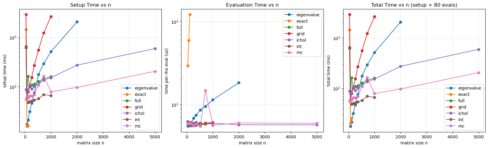

Logdet Method Profiling Across Matrix Sizes¶
This notebook profiles the runtime of different log-determinant strategies used in bayespecon:
exact: symbolic determinant routeeigenvalue: spectral precompute routegrid: spline interpolation over a precomputed gridfull: sparse-LU grid (MATLAB-stylelndetfull)int: sparse-LU + spline interpolation (MATLAB-stylelndetint)mc: Monte Carlo trace approximation (MATLAB-stylelndetmc)ichol: ILU-based approximation (MATLAB-stylelndeticholanalog)
For each matrix size, we report:
setup time: build + compile callable logdet function
evaluation time: average cost to evaluate at many rho values
import time
from dataclasses import dataclass
import numpy as np
import pandas as pd
import matplotlib.pyplot as plt
import pytensor
import pytensor.tensor as pt
from bayespecon.logdet import make_logdet_fn
def make_line_w(n: int) -> np.ndarray:
"""Create a row-standardized line-lattice W matrix."""
W = np.zeros((n, n), dtype=np.float64)
idx = np.arange(n)
W[idx[1:], idx[:-1]] = 1.0
W[idx[:-1], idx[1:]] = 1.0
row_sums = W.sum(axis=1, keepdims=True)
row_sums[row_sums == 0.0] = 1.0
return W / row_sums
def compile_logdet_callable(W: np.ndarray, method: str):
"""Return a compiled callable f(rho) and its setup time in seconds."""
t0 = time.perf_counter()
rho = pt.scalar('rho')
expr = make_logdet_fn(W, method=method, rho_min=-0.95, rho_max=0.95)(rho)
fn = pytensor.function([rho], expr)
setup_s = time.perf_counter() - t0
return fn, setup_s
def bench_eval_seconds(fn, rhos: np.ndarray, repeats: int = 5) -> float:
"""Median per-call evaluation latency in microseconds."""
run_times = []
for _ in range(repeats):
t0 = time.perf_counter()
for r in rhos:
_ = fn(float(r))
elapsed = time.perf_counter() - t0
run_times.append(elapsed / len(rhos))
return float(np.median(run_times))
@dataclass
class ProfileConfig:
# Include larger sizes to expose high-n behavior.
sizes: tuple[int, ...] = (40, 80, 120, 180, 260, 360, 520, 720, 1000, 2000, 5000, 10000)
methods: tuple[str, ...] = ('exact', 'eigenvalue', 'grid', 'full', 'int', 'mc', 'ichol')
method_max_n: dict = None
eval_points: int = 80
eval_repeats: int = 3
def __post_init__(self):
if self.method_max_n is None:
# Practical safety caps for this dense benchmark setup.
# - exact grows quickly, keep only small n
# - grid allocates an n_grid x n x n tensor internally
# - eigenvalue requires dense eigendecomposition
# - full/int/ichol use sparse factorizations across rho grid
# - mc uses stochastic trace approximation
self.method_max_n = {
'exact': 120,
'eigenvalue': 2000,
'grid': 1000,
'full': 1000,
'int': 1000,
'mc': 5000,
'ichol': 5000,
}
cfg = ProfileConfig()
rho_grid = np.linspace(-0.9, 0.9, cfg.eval_points)
results = []
skipped = []
for n in cfg.sizes:
W = make_line_w(n)
print(f'Profiling n={n}...')
for method in cfg.methods:
if n > cfg.method_max_n[method]:
skipped.append({'n': n, 'method': method, 'reason': 'above method_max_n cap'})
continue
try:
fn, setup_s = compile_logdet_callable(W, method)
eval_s = bench_eval_seconds(fn, rho_grid, repeats=cfg.eval_repeats)
results.append({
'n': n,
'method': method,
'setup_ms': 1e3 * setup_s,
'eval_us': 1e6 * eval_s,
})
except Exception as exc:
skipped.append({'n': n, 'method': method, 'reason': f'failed: {type(exc).__name__}: {exc}'})
res = pd.DataFrame(results).sort_values(['method', 'n']).reset_index(drop=True)
if not res.empty:
# Total cost for a full rho sweep used in this notebook.
res['total_ms'] = res['setup_ms'] + (res['eval_us'] * cfg.eval_points / 1e3)
res
Profiling n=40...
Profiling n=80...
Profiling n=120...
Profiling n=180...
Profiling n=260...
Profiling n=360...
Profiling n=520...
Profiling n=720...
Profiling n=1000...
Profiling n=2000...
Profiling n=5000...
Profiling n=10000...
| n | method | setup_ms | eval_us | total_ms | |
|---|---|---|---|---|---|
| 0 | 40 | eigenvalue | 622.318271 | 5.518337 | 622.759738 |
| 1 | 80 | eigenvalue | 17.172159 | 5.519975 | 17.613757 |
| 2 | 120 | eigenvalue | 20.929966 | 5.971200 | 21.407662 |
| 3 | 180 | eigenvalue | 31.333282 | 6.082163 | 31.819855 |
| 4 | 260 | eigenvalue | 46.304464 | 6.860500 | 46.853304 |
| ... | ... | ... | ... | ... | ... |
| 57 | 520 | mc | 107.923274 | 5.470125 | 108.360884 |
| 58 | 720 | mc | 163.075279 | 14.841713 | 164.262616 |
| 59 | 1000 | mc | 78.434889 | 5.629925 | 78.885283 |
| 60 | 2000 | mc | 96.733030 | 6.011275 | 97.213932 |
| 61 | 5000 | mc | 204.644745 | 5.943012 | 205.120186 |
62 rows × 5 columns
if res.empty:
raise RuntimeError('No profiling results were generated.')
fig, axes = plt.subplots(1, 3, figsize=(16, 4.8), constrained_layout=True)
for method, grp in res.groupby('method'):
grp = grp.sort_values('n')
axes[0].plot(grp['n'], grp['setup_ms'], marker='o', label=method)
axes[1].plot(grp['n'], grp['eval_us'], marker='o', label=method)
axes[2].plot(grp['n'], grp['total_ms'], marker='o', label=method)
axes[0].set_title('Setup Time vs n')
axes[0].set_xlabel('matrix size n')
axes[0].set_ylabel('setup time (ms)')
axes[0].set_yscale('log')
axes[0].grid(True, alpha=0.3)
axes[1].set_title('Evaluation Time vs n')
axes[1].set_xlabel('matrix size n')
axes[1].set_ylabel('time per rho eval (us)')
axes[1].set_yscale('log')
axes[1].grid(True, alpha=0.3)
axes[2].set_title(f'Total Time vs n (setup + {cfg.eval_points} evals)')
axes[2].set_xlabel('matrix size n')
axes[2].set_ylabel('total time (ms)')
axes[2].set_yscale('log')
axes[2].grid(True, alpha=0.3)
for ax in axes:
ax.legend()
plt.show()

summary = (
res.pivot_table(index='n', columns='method', values=['setup_ms', 'eval_us', 'total_ms'])
.sort_index()
)
display(summary)
if skipped:
skipped_df = pd.DataFrame(skipped).sort_values(['n', 'method']).reset_index(drop=True)
print('Skipped combinations (due to safety caps or failures):')
display(skipped_df)
| eval_us | setup_ms | total_ms | |||||||||||||||||||
|---|---|---|---|---|---|---|---|---|---|---|---|---|---|---|---|---|---|---|---|---|---|
| method | eigenvalue | exact | full | grid | ichol | int | mc | eigenvalue | exact | full | ... | ichol | int | mc | eigenvalue | exact | full | grid | ichol | int | mc |
| n | |||||||||||||||||||||
| 40 | 5.518337 | 29.252962 | 5.780087 | 5.860488 | 6.237062 | 6.199000 | 5.846600 | 622.318271 | 1441.303913 | 650.808613 | ... | 87.872708 | 620.514910 | 55.079819 | 622.759738 | 1443.644150 | 651.271020 | 2904.222548 | 88.371673 | 621.010830 | 55.547547 |
| 80 | 5.519975 | 59.259862 | 5.986338 | 5.818163 | 5.926487 | 5.816413 | 5.989725 | 17.172159 | 15.610050 | 87.804460 | ... | 77.895099 | 58.713077 | 56.266624 | 17.613757 | 20.350839 | 88.283367 | 57.690955 | 78.369218 | 59.178390 | 56.745802 |
| 120 | 5.971200 | 121.000763 | 5.936637 | 6.021663 | 6.084537 | 5.777963 | 5.890038 | 20.929966 | 15.793645 | 161.461573 | ... | 80.655074 | 47.813423 | 59.173164 | 21.407662 | 25.473706 | 161.936504 | 78.749460 | 81.141837 | 48.275660 | 59.644367 |
| 180 | 6.082163 | NaN | 5.592738 | 5.797750 | 5.668625 | 5.688413 | 5.975575 | 31.333282 | NaN | 99.992593 | ... | 107.211830 | 49.964296 | 64.481477 | 31.819855 | NaN | 100.440012 | 99.491164 | 107.665320 | 50.419369 | 64.959523 |
| 260 | 6.860500 | NaN | 5.942275 | 5.552163 | 5.950025 | 5.865250 | 5.600887 | 46.304464 | NaN | 107.664279 | ... | 90.087431 | 51.268502 | 64.544917 | 46.853304 | NaN | 108.139661 | 154.528794 | 90.563433 | 51.737722 | 64.992988 |
| 360 | 7.470763 | NaN | 5.601263 | 6.097938 | 5.729000 | 5.912587 | 5.928112 | 75.004650 | NaN | 112.909254 | ... | 100.582961 | 53.314569 | 68.942552 | 75.602311 | NaN | 113.357355 | 270.611739 | 101.041281 | 53.787576 | 69.416801 |
| 520 | 8.628800 | NaN | 5.625425 | 5.745025 | 5.851725 | 6.022425 | 5.470125 | 176.319032 | NaN | 127.167499 | ... | 112.804417 | 56.991664 | 107.923274 | 177.009336 | NaN | 127.617533 | 556.067550 | 113.272555 | 57.473458 | 108.360884 |
| 720 | 9.520100 | NaN | 5.832562 | 6.006763 | 5.869263 | 5.842700 | 14.841713 | 292.573498 | NaN | 144.855155 | ... | 135.247199 | 69.012153 | 163.075279 | 293.335106 | NaN | 145.321760 | 1228.395029 | 135.716740 | 69.479569 | 164.262616 |
| 1000 | 11.391113 | NaN | 6.013900 | 6.087912 | 5.966800 | 5.899937 | 5.629925 | 513.604688 | NaN | 159.495180 | ... | 152.150242 | 65.786569 | 78.434889 | 514.515977 | NaN | 159.976292 | 2657.401875 | 152.627586 | 66.258564 | 78.885283 |
| 2000 | 18.300812 | NaN | NaN | NaN | 5.714712 | NaN | 6.011275 | 2069.951421 | NaN | NaN | ... | 272.772624 | NaN | 96.733030 | 2071.415486 | NaN | NaN | NaN | 273.229801 | NaN | 97.213932 |
| 5000 | NaN | NaN | NaN | NaN | 5.699800 | NaN | 5.943012 | NaN | NaN | NaN | ... | 592.171751 | NaN | 204.644745 | NaN | NaN | NaN | NaN | 592.627735 | NaN | 205.120186 |
11 rows × 21 columns
Skipped combinations (due to safety caps or failures):
| n | method | reason | |
|---|---|---|---|
| 0 | 180 | exact | above method_max_n cap |
| 1 | 260 | exact | above method_max_n cap |
| 2 | 360 | exact | above method_max_n cap |
| 3 | 520 | exact | above method_max_n cap |
| 4 | 720 | exact | above method_max_n cap |
| 5 | 1000 | exact | above method_max_n cap |
| 6 | 2000 | exact | above method_max_n cap |
| 7 | 2000 | full | above method_max_n cap |
| 8 | 2000 | grid | above method_max_n cap |
| 9 | 2000 | int | above method_max_n cap |
| 10 | 5000 | eigenvalue | above method_max_n cap |
| 11 | 5000 | exact | above method_max_n cap |
| 12 | 5000 | full | above method_max_n cap |
| 13 | 5000 | grid | above method_max_n cap |
| 14 | 5000 | int | above method_max_n cap |
| 15 | 10000 | eigenvalue | above method_max_n cap |
| 16 | 10000 | exact | above method_max_n cap |
| 17 | 10000 | full | above method_max_n cap |
| 18 | 10000 | grid | above method_max_n cap |
| 19 | 10000 | ichol | above method_max_n cap |
| 20 | 10000 | int | above method_max_n cap |
| 21 | 10000 | mc | above method_max_n cap |
Coefficient and Fit-Time Comparison Across Logdet Methods¶
This section estimates the same SAR model using each logdet_method and compares:
posterior mean coefficients (
rho,beta_0,beta_1,beta_2)total wall-clock time to estimate each model
To keep this section runnable in docs contexts, sampling is intentionally modest.
import pymc as pm
from bayespecon import dgp
def simulate_sar_data(n: int = 80, seed: int = 2026):
"""Simulate a small SAR dataset for method comparison."""
rng = np.random.default_rng(seed)
W = make_line_w(n)
beta_true = np.array([1.0, 0.8, -0.5], dtype=np.float64)
rho_true = 0.35
sigma_true = 0.7
sim = dgp.simulate_sar(
W=W,
rho=rho_true,
beta=beta_true,
sigma=sigma_true,
rng=rng,
)
return sim["y"], sim["X"], sim["W_dense"]
def fit_sar_for_method(y, X, W, method: str, draws: int = 120, tune: int = 120, seed: int = 2026):
"""Fit SAR with a specific logdet method and return posterior means + runtime."""
t0 = time.perf_counter()
with pm.Model() as model:
rho = pm.Uniform("rho", lower=-0.95, upper=0.95)
beta = pm.Normal("beta", mu=0.0, sigma=2.0, shape=X.shape[1])
sigma = pm.HalfNormal("sigma", sigma=1.0)
mu = rho * (W @ y) + pt.dot(X, beta)
pm.Normal("obs", mu=mu, sigma=sigma, observed=y)
pm.Potential(
"jacobian",
make_logdet_fn(W, method=method, rho_min=-0.95, rho_max=0.95)(rho),
)
idata = pm.sample(
draws=draws,
tune=tune,
chains=2,
cores=1,
random_seed=seed,
progressbar=False,
compute_convergence_checks=False,
)
elapsed_s = time.perf_counter() - t0
beta_mean = idata.posterior["beta"].mean(("chain", "draw")).to_numpy()
rho_mean = float(idata.posterior["rho"].mean(("chain", "draw")).to_numpy())
return {
"method": method,
"total_time_s": elapsed_s,
"rho": rho_mean,
"beta_0": float(beta_mean[0]),
"beta_1": float(beta_mean[1]),
"beta_2": float(beta_mean[2]),
}
methods_for_model = ["exact", "eigenvalue", "grid", "full", "int", "mc", "ichol"]
y_model, X_model, W_model = simulate_sar_data(n=80)
model_rows = []
for m in methods_for_model:
print(f"Estimating SAR with method={m}...")
try:
model_rows.append(fit_sar_for_method(y_model, X_model, W_model, method=m))
except Exception as exc:
model_rows.append(
{
"method": m,
"total_time_s": np.nan,
"rho": np.nan,
"beta_0": np.nan,
"beta_1": np.nan,
"beta_2": np.nan,
"error": f"{type(exc).__name__}: {exc}",
}
)
coef_compare = pd.DataFrame(model_rows)
coef_compare = coef_compare.sort_values("total_time_s", na_position="last").reset_index(drop=True)
if "eigenvalue" in coef_compare["method"].values:
base = coef_compare.loc[coef_compare["method"] == "eigenvalue", ["rho", "beta_0", "beta_1", "beta_2"]].iloc[0]
for col in ["rho", "beta_0", "beta_1", "beta_2"]:
coef_compare[f"delta_vs_eigen_{col}"] = coef_compare[col] - base[col]
display(coef_compare)
Estimating SAR with method=exact...
Estimating SAR with method=eigenvalue...
Estimating SAR with method=grid...
Estimating SAR with method=full...
Estimating SAR with method=int...
Estimating SAR with method=mc...
Estimating SAR with method=ichol...
Initializing NUTS using jitter+adapt_diag...
Sequential sampling (2 chains in 1 job)
NUTS: [rho, beta, sigma]
Sampling 2 chains for 120 tune and 120 draw iterations (240 + 240 draws total) took 3 seconds.
Initializing NUTS using jitter+adapt_diag...
Sequential sampling (2 chains in 1 job)
NUTS: [rho, beta, sigma]
Sampling 2 chains for 120 tune and 120 draw iterations (240 + 240 draws total) took 1 seconds.
Initializing NUTS using jitter+adapt_diag...
Sequential sampling (2 chains in 1 job)
NUTS: [rho, beta, sigma]
Sampling 2 chains for 120 tune and 120 draw iterations (240 + 240 draws total) took 1 seconds.
Initializing NUTS using jitter+adapt_diag...
Sequential sampling (2 chains in 1 job)
NUTS: [rho, beta, sigma]
Sampling 2 chains for 120 tune and 120 draw iterations (240 + 240 draws total) took 1 seconds.
Initializing NUTS using jitter+adapt_diag...
Sequential sampling (2 chains in 1 job)
NUTS: [rho, beta, sigma]
Sampling 2 chains for 120 tune and 120 draw iterations (240 + 240 draws total) took 0 seconds.
Initializing NUTS using jitter+adapt_diag...
Sequential sampling (2 chains in 1 job)
NUTS: [rho, beta, sigma]
Sampling 2 chains for 120 tune and 120 draw iterations (240 + 240 draws total) took 0 seconds.
Initializing NUTS using jitter+adapt_diag...
Sequential sampling (2 chains in 1 job)
NUTS: [rho, beta, sigma]
Sampling 2 chains for 120 tune and 120 draw iterations (240 + 240 draws total) took 1 seconds.
| method | total_time_s | rho | beta_0 | beta_1 | beta_2 | delta_vs_eigen_rho | delta_vs_eigen_beta_0 | delta_vs_eigen_beta_1 | delta_vs_eigen_beta_2 | |
|---|---|---|---|---|---|---|---|---|---|---|
| 0 | mc | 1.341219 | 0.441419 | 0.960317 | 0.838305 | -0.470398 | 4.815698e-02 | -6.731478e-02 | -8.971806e-04 | -1.215605e-02 |
| 1 | ichol | 1.442066 | 0.389311 | 1.034617 | 0.837996 | -0.465333 | -3.951439e-03 | 6.985138e-03 | -1.206297e-03 | -7.090989e-03 |
| 2 | full | 2.155071 | 0.389311 | 1.034617 | 0.837996 | -0.465333 | -3.951439e-03 | 6.985138e-03 | -1.206297e-03 | -7.090989e-03 |
| 3 | eigenvalue | 2.262632 | 0.393262 | 1.027632 | 0.839202 | -0.458242 | 0.000000e+00 | 0.000000e+00 | 0.000000e+00 | 0.000000e+00 |
| 4 | int | 2.328452 | 0.396423 | 1.018286 | 0.837977 | -0.466436 | 3.161042e-03 | -9.346166e-03 | -1.225126e-03 | -8.193148e-03 |
| 5 | grid | 3.962131 | 0.386312 | 1.045246 | 0.843737 | -0.462901 | -6.950444e-03 | 1.761418e-02 | 4.534804e-03 | -4.658188e-03 |
| 6 | exact | 6.459487 | 0.393262 | 1.027632 | 0.839202 | -0.458242 | -7.654325e-10 | 9.472312e-11 | -7.411561e-10 | -1.815156e-10 |
Notes¶
exactis expected to scale poorly and is intentionally capped at smaller n in this notebook.eigenvalueusually has moderate setup cost and very fast repeated evaluations.gridhas an upfront grid-construction cost but can be competitive for repeated evaluation scenarios.fullandintare sparse-LU variants inspired by the MATLAB toolbox routines.mcis stochastic and may vary slightly run-to-run unless random seeds are fixed.icholuses an ILU approximation that can trade precision for speed depending on sparsity.Adjust
ProfileConfig.sizesandmethod_max_nfor deeper stress tests.